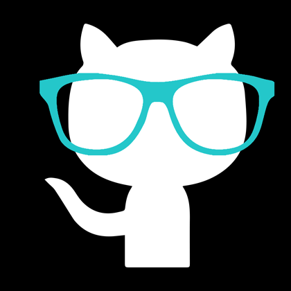

About Me
I live with my girlfriend Toni, our three cats and two dogs on the East side of Saint Paul. We are like the Brady Bunch except with pets instead of kids. When I first met Toni I had a my trusty sidekick Russell, a beagle/golden retriever mix and elderly calico cat Daisy. Toni had two tabby cats, Jorge and Mowgli. When we moved in together the house became a zoo. Unfortunately my beloved dog Russell passed away a few years ago. We adopted another dog Billy Bob, a coonhound mix from Tennessee. He's a true Tennessee hound who loves his whiskey. We found this out by accident, which is another story. Billy Bob is a sweetheart of a pup who seemed like he needed another canine companion. Wanting to adopt a dog that may have a harder time finding a home we ended up getting a puppy mill rescue dog, since they are said to better recover from the trauma of living a life in a cage if they are adopted to a home with another dog. Tucker is a very busy beagle who is always getting into things at home and stealing toys from other dogs at the dog park. We love taking our hounds Billy Bob and Tucker to the dog park and around the neighborhood. If it wasn't for them we wouldn't get nearly as much fresh air and exercise as we do. We live a pretty quiet life in our little zoo.